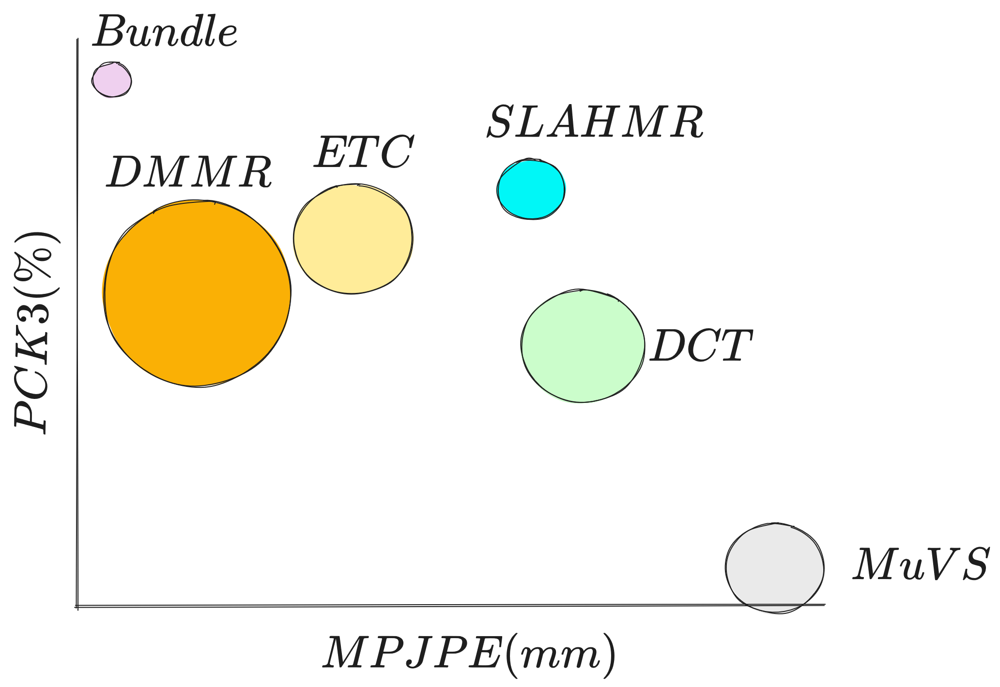

Capturing smooth motions from videos using markerless techniques typically involves complex processes such as temporal constraints, multiple stages with data-driven regression and optimization, and bundle solving over temporal windows. These processes can be inefficient and require tuning multiple objectives across stages. In contrast, BundleMoCap introduces a novel and efficient approach to this problem. It solves the motion capture task in a single stage, eliminating the need for temporal smoothness objectives while still delivering smooth motions. BundleMoCap outperforms the state-of-the-art without increasing complexity. The key concept behind BundleMoCap is manifold interpolation between latent keyframes. By relying on a local manifold smoothness assumption, we can efficiently solve a bundle of frames using a single code. Additionally, the method can be implemented as a sliding window optimization and requires only the first frame to be properly initialized, reducing the overall computational burden. BundleMoCap's strength lies in its ability to achieve high-quality motion capture results with simplicity and efficiency.

BundleMoCap fits an articulated template mesh to 2D keypoint observations from a sparse set of multi-view videos. Instead of iteratively optimizing pose parameters for each frame, we focus on optimizing the latent code \(z^t\) corresponding to the pose parameters \(\theta^t = \mathcal{G}(z^t)\) for a single keyframe (\(t^i=T\)). This relies on the reconstruction of the poses, root orientation and translation via interpolation, generating the intermediate frames (visually indicated by the blending between the start and end keyframes). A sliding window optimization implementation is used where only the first frame is fit in a standalone manner. Then, the \(i\text{th}\) temporal window \(\mathcal{T}^i\) that is solved as a bundle, optimizes only the next latent keyframe (\(t^i=T\)), while reconstructing the frames between the previously optimized keyframe (\(t^i=0\)) and the next. All reconstructed frames are constrained by the respective multi-view keypoint constraints via \(\mathcal{E}^\mathcal{T}_{data}\) while the latent keyframe is regularized by \(\mathcal{E}^\mathcal{T}_{prior}\). BundleMoCap requires just a single stage to achieve comparable results with the state-of-the-art without pose initialisation for each frame and delivers smooth motions efficiently without using any motion smoothness objective.
BundleMoCap on the MPI dataset, subject S8, and Sequence 2, on different time windows.
BundleMoCap results on fast dynamic motion using a 7 low-cost camera capture system.
Comparison with different architectures. This video presents a comparative analysis of various multi-view methods on Human3.6M dataset on various actions. Our study begins with a standard multi-view fitting as a baseline MuVS [1], then advances to explore more sophisticated techniques such as DCT [2], ETC [3], DMMR [4], and SLAHMR [5].
A visual summary of the performance (horizontal and vertices axes) and efficiency (runtime illustrated as the size of each point) of different methods. BundleMoCap’s competitive results are achieved with a minimal computational burden, without the need for 3D initialization, or a smoothness objective. Its efficiency is greatly boosted from its single-stage nature, making it an more appropriate choice for practical applications. 
Raw MoCap data need post-processing even when captured with high-end systems. This process usually involves one or more animators, it is tedious and time-consuming. Further, the advent of AI-powered MoCap enables capturing with more generic and lower-cost cameras, introducing additional noise to the captured data, making the need for automatic post-processing more imminent.
We present a novel solution that alleviates the issues associated with the arduous post-processing of raw motion data, involving the rectification of errors such as missing, mislabeled, or occluded markers. Such challenges are exacerbated when utilizing low-cost sensing devices, where such errors are amplified. To that end, we introduce a real-time and artefact-free MoCap-solving data-driven model, which combined with an innovative noise-aware temporal fitting method, enables high-quality MoCap even when using a sparse set of low-cost sensors. Our fitting method can process any raw motion data, regardless of the capturing method, including both optical and inertial. This means it is not limited to specific sensor types and can handle a wide range of data sources. Our data-driven model can simultaneously denoise, solve, and hallucinate the raw unstructured point cloud, while our fitting approach models the uncertainty region of measurements and refines the real-time MoCap data by optimizing within a temporal window. This results in more accurate outcomes and ensures temporal coherence, preventing common failures and induced artefacts.
The demo consists of 4 distinct step, although highlighting the automatic post-processing technology for smoothing and refining the captured data: a) capture the user's movement with camera sensors, b) estimate user's body pose in real-time (check here how), c) refine the initial estimation by fitting an articulated template mesh to 3D landmarks, and d) Visualize the comparison between the fitted meshes of the real-time vs postprocessed results, their 3D skeleton reprojections, and joints angles.

@inproceedings{albanis2023bundle,
author = {Albanis, Georgios, and Zioulis, Nikolaos, and Kolomvatsos, Kostas.},
title = {BundleMoCap: Efficient, Robust and Smooth Motion Capture from Sparse Multiview Videos},
booktitle = {20th ACM SIGGRAPH European Conference on Visual Media Production (CVMP) 2023},
url = {https://moverseai.github.io/bundle/},
month = {December},
year = {2023}
}@inproceedings{albanis2023bundle,
author = {Albanis, Georgios, and Zioulis, Nikolaos, and Thermos, Spyridon, and Chatzitofis, Anargyros and Kolomvatsos, Kostas.},
title = {MoCatalyst: Accelerating and Automating MoCap},
booktitle = {IEEE/CVF International Conference on Computer Vision (ICCV) Demo},
url = {https://moverseai.github.io/bundle/},
month = {October},
year = {2023}
}